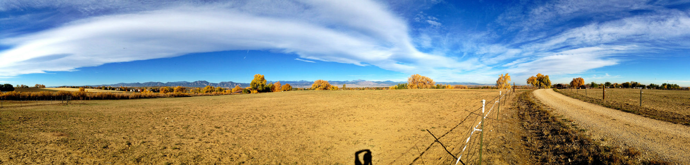
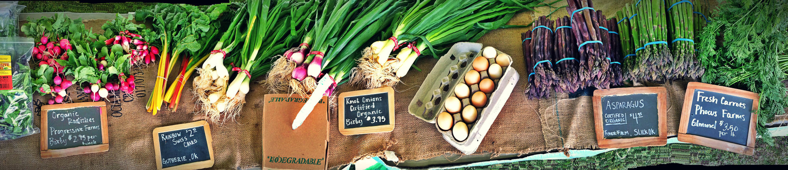
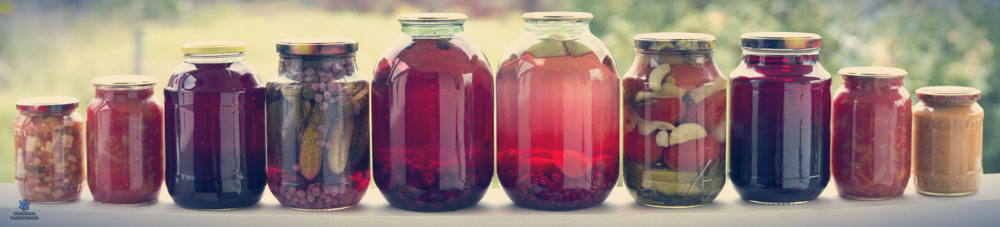

E N A C T U S - L E I C E S T E R
F A R M E R S ' - M A R K E T
Enactus Leicester's Farmers' Market is a project where we provide local farmers an opportunity to sell their varied fresh foods to students and staff during an all day event as an alternative to what is sold on campus. These events are held 3 to 4 times during the academic year and are located on Mayor's Walk, just outside the Students' Union building.
All products sold at the Farmers' Market are made from sustainable resources and are regulated by the University of Leicester Environmental Sustainability Policy.
We are also planning on introducing a new project to go along the Farmers' Market as a way to expand our area of focus as well as to see how we can improve.
Working on the Farmers' Market project is a great opportunity you gain experience in running and organising an event which involves management, marketing and finance as this project was created with a profit motive therefore meaning that it has to be run profitably, which is not different from any other business.
All profits go to supporting and running all of Enactus Leicester's projects.
Project Leader Contact Details:
enactusleicestermarket@gmail.com